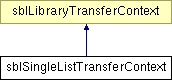

sbISingleListTransferContext Interface Reference
This interface represents a transfer of a single media list.
More...
import "sbILibraryTransferContext.idl";
Inheritance diagram for sbISingleListTransferContext:

List of all members.
|
Public Attributes |
|
readonly attribute sbIMediaList | list |
| | The single item media list payload.
|
Detailed Description
This interface represents a transfer of a single media list.
This interface will be sent with the following flavor: application/x-sb-transfer-media-list
Definition at line 87 of file sbILibraryTransferContext.idl.
The documentation for this interface was generated from the following file:
Generated on Tue Sep 11 18:42:47 2007 for Songbird by
 1.5.2
1.5.2